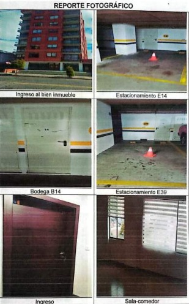
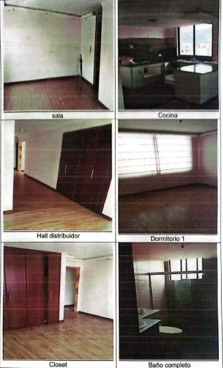
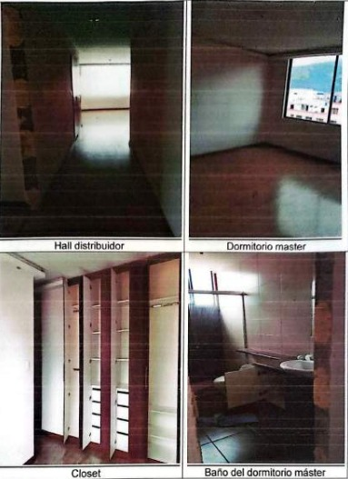

← volver al mapa
Departamento - EC-RJ-154678
EC-RJ-154678 · departamento · QUITO, Pichincha
★ Oferta destacada



Datos del remate
| Avalúo pericial | $98,290 |
| Tipo de bien | departamento |
| Área de construcción | 115.10 m² |
| Área de terreno | 86.77 m² |
| Cantón / Provincia | QUITO, Pichincha |
| Dirección / Sector | LA FLORESTA. edificio "zon" n24b madrid y toledo |
| Señalamiento | Primer Señalamiento |
| Fecha de remate | 2026-09-02 |
| No. de proceso | 17230202202291 |
Análisis vs. mercado
| Avalúo por m² | $854/m² |
| Mediana de mercado en la zona | $867/m² |
| Descuento vs. mercado | 1.5% |
| Comparables usados | 75 |
| Radio de búsqueda | 2000 m |
| Puntaje | 44/100 |
Descripción completa del avalúo
el bien inmueble embargado se encuentra dentro del edificio zon, en el quinto piso, departamento 54, dos estacionamientos (e14 y e39) y una bodega (b14).
el bien inmueble consta de un departamento con sala- comedor, cocina, hall distribuidor, 1 dormitorio master, 1 dormitorio sencillo, baño completo, 1 parqueadero cubierto y una bodega en el subsuelo 1 y 1 parqueadero cubierto en el subsuelo 2; sus linderos se encuentran totalmente definidos, dispone de todos los servicios publicos, el ingreso tanto peatonal como vehicular se lo realiza por la calle madrid al edificio " zon".
edificio "zon" n24b madrid y toledo
Límites: norte:8.77m, 3.20m y 3.58m con vacio sobre area verde recreativa comunal1 total 15.55; sur: 5.37m con suite 53, 1.25m, 6.00m y 3.28m con circulacion peatonal comunal y 0.80m con ducto is-2 total 16.70; este: 6.53m con vacio sobre area verde recreativa comunal1, mas 0.65m con ducto is-2 y 0.10m con vacio sobre area verde recreativa comunal 1 total 6.53; oeste: 5.00m con suite 55, 0.15m y 1.28m con circulacion peatonal comunal, mas 0.65m con ducto is-2 y 0.10m con vacio sobre area verde recreativa comunal 1 total 6.43.
Clave catastral: 170104230138013165
Análisis de inversión
⚠ Dudosa — revisar bienDescuento prácticamente nulo (1%); incluye 2 parqueaderos y bodega, buena ubicación en Quito norte.
A favor:
- Incluye parqueaderos y bodega
En contra:
Análisis elaborado a partir de la descripción del avalúo — no es asesoría legal ni financiera.
Esta ficha es una copia de lo publicado en el sitio oficial de remates
judiciales de la Función Judicial del Ecuador, para consulta — no
reemplaza el expediente judicial. remates.funcionjudicial.gob.ec no da
un link propio por remate, por eso se generó esta página aparte.
Antes de ofertar, el expediente debe revisarlo un abogado.